Title
Picture A
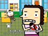
Picture B
中文 | English
Everyday Good Habits, EGH
《天天好习惯》是一部57集的动画系列片，故事发生在二龙路小学四（3）班的同学们身上，五分钟一集，每一集讲一个生活中的好习惯。这部片子所有的人物造型全部是方形，这在以前的动画片里头很少出现。更有意思的是这部片子所有的配音全部是用嘴配出来的，包括人走路的声音、鸟扑腾翅膀的声音等等，所有的动效甚至片子当中的音乐有一种非常特殊的效果。
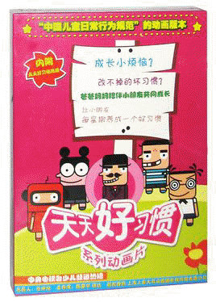最后更新：2019/07/12 Github
| 天天好习惯 | |
| 导 演 | 陈廖宇，速达，韩博，崔威 |
| 主要人物 | 王小枪，胡小力，唐果儿 |
动画介绍
《天天好习惯》这部系列片通对口配动效这种新形式的尝试在录制过程中也给予了我们所有录制人员太多的快乐，仿佛真的让我们回到了那种特别童真，特别快乐的童年时光。
《天天好习惯》讲故事的方式也和别的动画片有点不一样。
《天天好习惯》讲述的是小学生的一个故事，它比较独特的是它不是以成人的视角而是以孩子们自己的视角来看待身边发生的一些事情，鼓励学生们在他们很小的时候就开始建立一种判断是非的观念。
为了加深大家对我们要说的这个习惯的印象，我们每集结束的时候都刻意安排了一个小舞台表演的精彩段落，看起来很像是喊口号但是我们认为我们把喊口号的这种做法本身，把它变成了一种很有喜剧色彩的处理方式。
你会发现它是一部和以前的动画片不太一样的动画片。(因为以新闻方式出现)
| 主要人物 |
王小枪·胡小力·欧阳米兰·唐果儿·毛荣荣·郭大海·丁茂盛·盛一门(圣一门)·罗斯·三胞胎兄弟
| 金美丽·郝老师 |
| 次要人物 | 袁爷爷·王小枪爸爸·罗斯妈妈·王小枪奶奶·王小枪妈妈 |
主要人物
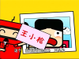
{kind=link}
王小枪
男，11岁，主角，捣蛋鬼、不懂纪律、不礼貌，视力很好，典型的“负面教材”，总是露个肚子，口头禅：“没什么大不了的”。
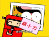
{kind=link}
胡小力
特别八卦，好像没有他不知道的事，口头禅：“可千万别说是我说的呀”。
{kind=link}
欧阳米兰
生日8月11日，四（3）班班长，戴眼镜，学习好，爱劳动，特别有管理能力，说话总是好像在打官腔。
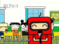
唐果儿
每一集都会出现的节目主持人和记者。
{kind=link}
毛荣荣
纪律好又和善，爱哭鼻子，胆子特别小，说话时经常一边说一边吮奶嘴。
{kind=link}
郭大海
四（3）班体育委员，球踢得好，还很爱装酷。
{kind=link}
丁茂盛
特别爱睡觉，包子头，贪吃（尤其爱吃包子）。
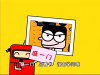
{kind=link}
盛（圣）一门
男，爱看书，很有学问，头脑古怪，做事情也古怪（实际上是个机器人），头跟米老鼠的头差不多。
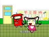
{kind=link}
罗斯
女，爱打扮，非常爱臭美。
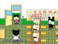
三胞胎兄弟
经常一起出现、说同一句话、做同一件事的三胞胎。
金美丽
女，四（3）班体育老师。
{kind=link}
郝老师
男，四（3）班班主任。
次要人物
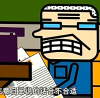
{kind=link}
袁爷爷 二龙路小学传达室的爷爷，经常看报纸。《二龙路校报》《天天时报》
{kind=link}
王小枪爸爸 大名鼎鼎的兽医。
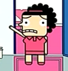
{kind=link}
罗斯妈妈
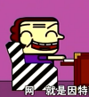
王小枪奶奶
王小枪妈妈 特别喜欢欧阳米兰。